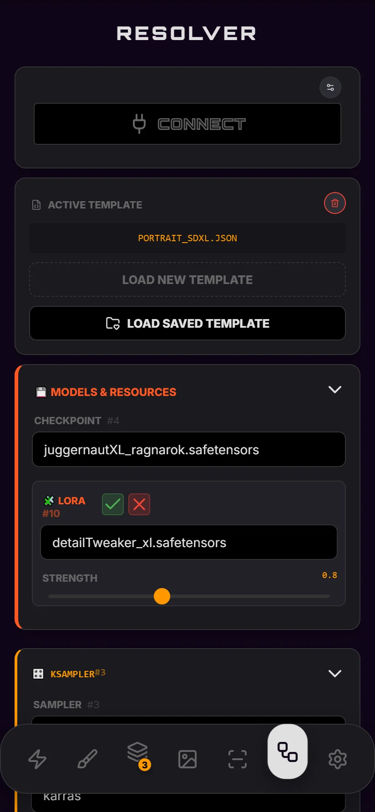

Docs / Advanced
ComfyUI
If you build workflows in ComfyUI, Resolver can run them. Load a workflow as a template and the app makes phone-sized controls for its prompts, models, sampler, size and input images.
Switching it on
- Start ComfyUI so the phone can reach itWith
--listen --enable-cors-header. See Set up ComfyUI. - Check the portConfig → Connection → Local ports → Comfy: 8188 unless you changed it.
- Show the tabConfig → Interface → Visible tabs → COMFY. A appears in the dock.
- Tap CONNECTGrey: not connected; a green pulse: connecting; a purple glow: connected. If the connection drops it tries again by itself, waiting a little longer each time.
Templates: your workflows
In ComfyUI, save your workflow in API format: Workflow → Export (API) (older versions: enable Dev mode, then Save (API Format)). Copy the .json to the phone.
- LOAD NEW TEMPLATE
- Opens a
.json. It becomes the ACTIVE TEMPLATE and is kept for next time, with your changes.
- LOAD SAVED TEMPLATE
- The Saved Workflow list: tap one to load it. IMPORT adds several files at once, SELECT then DELETE SELECTED removes some, CLEAR ALL removes all.
- Unloads the active template.
- Opens Config.

The controls it builds
Resolver reads the workflow’s nodes and gives the common ones proper controls. Each box folds, and remembers whether it’s open.
- Resources
- Checkpoint, LoRA (with model and CLIP strength), VAE, CLIP / text encoder and UNET loaders, as lists filled from your ComfyUI.
- Text
- Each
CLIPTextEncodenode’s prompt, under its title (Positive, Negative…).
- Sampler
KSampler/KSamplerAdvanced: seed (with a random button), steps, CFG scale, sampler, schedule, denoise.
- Resolution
EmptyLatentImage/EmptySD3LatentImage: width and height.
- Input Image
LoadImage: upload a picture, and Mask/Edit it: the Inpaint canvas opens with MASK and PAINT (with a colour) modes, then APPLY MASK.
- Power Lora Loader
- rgthree’s node: each LoRA slot with its strength, and slots to add or remove.
- Extra nodes
- Every other node’s settings (numbers, text, switches), in a box that starts folded. Wires between nodes are left alone.

Running it
- GENERATE sends the workflow with your values; stops it.
- LIVE MONITOR: the progress bar and a live preview as ComfyUI works.
- FINISHED OUTPUTS: every image the workflow makes, in order. Tap one to view or download it. SELECT then SAVE (n) saves the ones you pick to History; CLEAR empties the strip.
- The final image is saved to History by itself, and you get a “ComfyUI Generation Complete” notification if the app is in the background.
Templates are in backups
Tick Comfy Templates in BACK UP to keep your saved workflows.